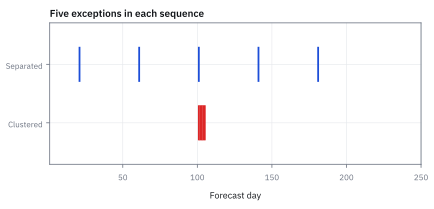
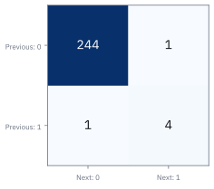
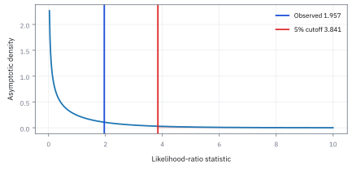
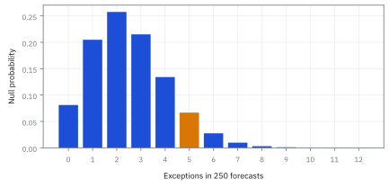
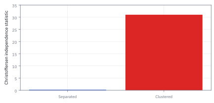

17.7 VaR Backtesting: Kupiec and Christoffersen
นับครั้งที่พลาด แล้วตรวจว่าความผิดพลาดมาติดกันหรือไม่
ระบบพยากรณ์พลาดจำนวนเท่ากันสองชุด แต่ชุดหนึ่งพลาดติดกันหลายวัน; คุณภาพเท่ากันหรือไม่?
เฉลย: ไม่เท่ากัน—ความพลาดที่เกาะกลุ่มทำให้ความเสี่ยงรุนแรงกว่า. Kupiec ตรวจความถี่ ส่วน Christoffersen ตรวจการเกาะกลุ่ม; การนับหลุมบนถนนไม่พอ ต้องดูว่าหลุมเรียงเป็นร่องเดียวหรือไม่.
ศัพท์ที่ใช้ในหัวข้อนี้
- Value at Risk (VaR)
- จุดตัดขาดทุนที่ระดับความเชื่อมั่นและช่วงเวลาที่ระบุ ใช้เปรียบเทียบคำพยากรณ์กับขาดทุนที่เกิดขึ้น
- breach
-
คืออะไร: วันที่ขาดทุนจริงเกินระดับที่แบบจำลองบอกว่าไม่ควรเกิน
ใช้ทำอะไร: เป็นเหตุการณ์ที่เรานับจำนวนของมัน แล้วเอาไปทดสอบ
ทำไมการมีบ้างถึงไม่ใช่เรื่องผิด: เพราะแบบจำลองที่บอกว่าจะเกิด 1 เปอร์เซ็นต์ของวัน *ต้อง* มีวันแบบนี้ประมาณ 2 ถึง 3 วันต่อปี ถ้าไม่มีเลยแปลว่าแบบจำลองระวังเกินไป
- exception
-
คืออะไร: อีกชื่อหนึ่งของเหตุการณ์เดียวกัน ที่ใช้ในเอกสารกำกับดูแล
ใช้ทำอะไร: ใช้เวลาอ่านเกณฑ์ของธนาคารกลางซึ่งใช้คำนี้
ทำไมต้องรู้ทั้งสองคำ: เพราะตำราใช้คำหนึ่ง ส่วนเอกสารที่ต้องส่งจริงใช้อีกคำหนึ่ง ทั้งที่นับสิ่งเดียวกันด้วยวิธีเดียวกัน
- Proportion of Failures (POF)
- สัดส่วนครั้งที่ขาดทุนเกินจุดตัดในชุดทดสอบ ใช้ตรวจว่าความถี่สอดคล้องกับระดับ VaR หรือไม่
- likelihood ratio (LR)
- ตัวเลขที่เทียบว่าข้อมูลเข้ากับ model สองแบบต่างกันแค่ไหน ใช้ตัดสินว่า model ที่ซับซ้อนกว่า อธิบายข้อมูลได้ดีขึ้นจริง หรือดีขึ้นเพราะมีตัวปรับมากกว่าเฉย ๆ
- independence
- เงื่อนไขที่การเกิดเหตุการณ์หนึ่งไม่เปลี่ยนโอกาสของอีกเหตุการณ์ ใช้ตรวจว่าความผิดพลาดมีการเกาะกลุ่มตามเวลาหรือไม่
- Markov
- สมมติฐานที่สถานะล่าสุดสรุปข้อมูลอดีตที่ใช้พยากรณ์สถานะถัดไป ใช้สร้างทางเลือกที่โอกาสพลาดขึ้นกับวันก่อน
- p-value
- ความน่าจะเป็นภายใต้สมมติฐานศูนย์ที่จะเห็นสถิติรุนแรงอย่างน้อยเท่าที่พบ ใช้ตัดสินการปฏิเสธตามระดับที่กำหนดล่วงหน้า
สัญลักษณ์ที่ใช้ในหัวข้อนี้
| สัญลักษณ์ | ความหมาย | หน่วย |
|---|---|---|
| $L_t$ | ขาดทุนจริงของวันที่ $t$ นับเป็นบวกเมื่อเสีย | USD |
| $v_t$ | เส้นเตือนที่แบบจำลองประกาศไว้ *ก่อน* วันนั้นเริ่ม | USD |
| $I_t$ | ตัวชี้ว่าวันนั้นทะลุเส้นหรือไม่ เป็นหนึ่งเมื่อทะลุ ศูนย์เมื่อไม่ทะลุ | ศูนย์หรือหนึ่ง |
| $T$ | จำนวนวันที่ตรวจย้อนหลังทั้งหมด | จำนวน |
| $x$ | จำนวนวันที่ทะลุเส้นจริง | จำนวน |
| $p$ | สัดส่วนที่แบบจำลองสัญญาไว้ว่าจะทะลุ เช่น 0.01 | สัดส่วน |
| $\hat p$ | สัดส่วนที่ทะลุจริง คือ $x$ ส่วนด้วย $T$ | สัดส่วน |
| $n_{ij}$ | จำนวนครั้งที่วันก่อนอยู่สถานะ $i$ แล้ววันนี้อยู่สถานะ $j$ | จำนวน |
| $\pi_i$ | โอกาสทะลุวันนี้ เมื่อรู้ว่าเมื่อวานอยู่สถานะ $i$ | สัดส่วน |
| $\hat\pi$ | โอกาสทะลุรวม โดยไม่สนใจว่าเมื่อวานเป็นอย่างไร | สัดส่วน |
| $\mathrm{LR}_{uc},\mathrm{LR}_{ind},\mathrm{LR}_{cc}$ | สถิติความถี่, independence และการตรวจร่วม | ไม่มีหน่วย |
| $\lambda_{\mathrm{uc}}$ | อัตราส่วน likelihood ระหว่างแบบจำลองที่ตรึง $p$ กับแบบจำลองที่เปิดให้อิสระ | ไม่มีหน่วย |
| $\ell_1,\ell_0$ | log-likelihood ของแบบจำลอง Markov สองสถานะ และแบบจำลองที่ไม่ขึ้นกับวันก่อนหน้า | ไม่มีหน่วย |
ที่มาที่ไป: ใครตรวจสอบคนที่ตรวจสอบความเสี่ยง
เมื่อการวัดความเสี่ยงกลายเป็นข้อบังคับตามกฎหมาย คำถามถัดมาที่หลีกเลี่ยงไม่ได้คือ แล้วใครตรวจว่าตัวเลขที่รายงานนั้นถูกต้อง
ธนาคารมีแรงจูงใจให้รายงานความเสี่ยงต่ำ เพราะต้องดำรงเงินกองทุนน้อยลง จึงต้องมีวิธีตรวจย้อนที่เป็นกลางและตรวจสอบได้
Paul Kupiec เสนอวิธีนับจำนวนครั้งที่ขาดทุนทะลุเกณฑ์ในปี 1995 ซึ่งตรงไปตรงมาแต่ยังไม่พอ
Peter Christoffersen ชี้ในปี 1998 ว่าการนับอย่างเดียวมองข้ามปัญหาที่อันตรายกว่า คือความผิดพลาดมากระจุกกันในไม่กี่วัน ซึ่งเป็นรูปแบบของการล้มละลาย ไม่ใช่รูปแบบของความบังเอิญ
ที่มาทางประวัติศาสตร์: เกณฑ์ Basel ปี 1996 สู่ Kupiec และ Christoffersen
ในปี 1996 คณะกรรมการบาเซิลด้านการกำกับดูแลการธนาคาร (Basel Committee on Banking Supervision) ได้ออกเกณฑ์ Market Risk Amendment ซึ่งอนุญาตให้สถาบันการเงินใช้แบบจำลอง Value at Risk (VaR) ภายในของตนเองในการคำนวณเงินกองทุนตามกฎหมายได้เป็นครั้งแรก
แต่หน่วยงานกำกับดูแลไม่สามารถเชื่อใจแบบจำลองกล่องดำของสถาบันการเงินได้โดยตรง จึงต้องมีกรอบการทดสอบย้อนหลัง (backtesting) ที่เป็นรูปธรรมเพื่อตรวจสอบว่า แบบจำลองที่อ้างว่าคลุมความเสี่ยง 99% นั้น คลุมได้จริงตามที่กล่าวอ้างหรือไม่ หรือแอบลดค่าประมาณความเสี่ยงเพื่อประหยัดเงินกองทุน
Paul H. Kupiec ในปี 1995 ได้เสนอบททดสอบ Proportion of Failures (POF) โดยใช้หลักการ Likelihood Ratio Test เพื่อตรวจว่าสัดส่วนวันที่ขาดทุนเกิน VaR สอดคล้องกับโอกาส 1% หรือไม่
ต่อมาในปี 1998 Peter F. Christoffersen ชี้ให้เห็นจุดบอดสำคัญว่า การนับเฉพาะจำนวนวันทะลุรวมทั้งปีของ Kupiec นั้นมองไม่เห็นการเกาะกลุ่มของความเสี่ยง (volatility clustering) หากพอร์ตขาดทุนเกิน VaR ห้าวันกระจายกันทั้งปี ย่อมไม่เหมือนกับการขาดทุนเกิน VaR ห้าวันติดต่อกันในสัปดาห์เดียว ซึ่งอาจทำให้กองทุนล้มละลายได้ทันที เขาจึงพัฒนาบททดสอบ Markov independence ขึ้นมาเติมเต็ม
ของที่โจทย์ให้ — Worked Example — พลาด 5 วันเหมือนกัน แต่เรียงคนละแบบ
เรามี VaR forecast ระดับ 99% ที่ล็อกไว้ล่วงหน้า 250 วัน และพบ breach 5 วัน ชุดแรกพลาดแยกกัน ส่วนชุดที่สองพลาดติดกัน 5 วัน คำถามคือจำนวนเท่ากันแปลว่า model ดีเท่ากันหรือไม่
กำหนดว่าขาดทุนต้องมากกว่าจุดตัดจึงนับเป็น breach และใช้ P&L ที่ตรงกับ position ของ model ห้ามเห็นผลวันนี้แล้วแก้ forecast ย้อนหลัง เพราะนั่นคือเปลี่ยนข้อสอบหลังรู้เฉลย
ขั้นที่ 1 — จากขาดทุน USD เป็นข้อมูลสำหรับทดสอบ
ก่อนทดสอบอะไรได้ ต้องแปลงตัวเลขขาดทุนรายวันให้เป็นข้อมูลแบบผ่านหรือไม่ผ่านก่อน
จำนวนคาดหมาย 2.5 ไม่ได้บังคับให้ข้อมูล 250 วันต้องพลาดสองหรือสามครั้งเสมอ ภายใต้สมมติฐาน independence จำนวนพลาดมี binomial distribution
ขั้นที่ 2 — ที่มาของสูตรสถิติ Kupiec: จาก Binomial Likelihood สู่ Wilks' Theorem
สร้าง Likelihood Ratio Test โดยเปรียบเทียบ likelihood ภายใต้สมมติฐานหลักที่กำหนด $p=0.01$ กับ likelihood ที่ใช้ $\hat p=x/T$ จากข้อมูลจริง
สมการแรกเขียน likelihood ของจำนวนวันที่ขาดทุนเกิน VaR ภายใต้ Binomial model สองแบบ แบบแรกตรึงโอกาส $p$ ไว้ตามทฤษฎี แบบที่สองเปิดให้ใช้ $\hat p$ ที่ข้อมูลเลือกเอง
อัตราส่วน $\lambda_{\mathrm{uc}}$ วัดว่าแบบจำลองที่ตรึง $p$ อธิบายข้อมูลได้ด้อยกว่าแบบจำลองที่ปรับตามข้อมูลจริงมากน้อยเพียงใด
ตามทฤษฎีของ Wilks ค่า $-2\ln\lambda_{\mathrm{uc}}$ จะมี distribution เข้าใกล้ chi-square หนึ่งองศาอิสระเมื่อขนาดข้อมูล $T$ มีมากพอ
เครื่องหมายลบหน้าเลข 2 ถูกใช้กลับเศษเป็นส่วนในlogarithm ทำให้สูตรของ Kupiec อยู่ในรูปผลบวกของค่า log ที่เข้าใจง่าย
ขั้นที่ 3 — แทนค่าตัวเลขจริงในสถิติ Kupiec
แทนตัวเลข $T=250$, $x=5$, $p=0.01$ และ $\hat p=0.02$ ลงในสูตร Kupiec เพื่อคำนวณค่าสถิติและหา p-value
พจน์แรกเป็นบวกเพราะเกิด breach $0.02$ บ่อยกว่าค่าเป้าหมาย $0.01$ พจน์ที่สองเป็นลบเพราะวันที่ไม่เกิด breach มีน้อยกว่าที่ควร
ทั้งสองพจน์เกือบหักล้างกัน ค่าสถิติ Kupiec จึงเหลือเพียง $1.9568$ ซึ่งต่ำกว่าค่าวิกฤต $3.841$ ที่ระดับนัยสำคัญ $5\%$
เมื่อคำนวณพื้นที่ใต้กราฟ chi-square หนึ่งองศาอิสระ จะได้ p-value เท่ากับ $0.162$ ซึ่งสูงกว่า $0.05$
บททดสอบ Kupiec จึงยังไม่ปฏิเสธแบบจำลอง เพราะการทะลุ 5 ครั้งใน 250 วันยังอยู่ในวิสัยของความบังเอิญทางสถิติได้
แล้วเอาไปใช้ทำอะไรได้จริงบ้าง
การตรวจย้อนว่าแบบจำลองความเสี่ยงทำงานจริงหรือไม่ เป็นข้อบังคับของหน่วยงานกำกับ
ใช้รายงานต่อผู้กำกับดูแลว่าแบบจำลองที่ใช้ผ่านเกณฑ์ ซึ่งถ้าไม่ผ่านจะต้องดำรงเงินกองทุนเพิ่ม
ใช้ตรวจว่าความผิดพลาดกระจุกตัวหรือไม่ ซึ่งอันตรายกว่าการผิดพลาดบ่อยแต่กระจาย
ใช้ตัดสินใจว่าควรปรับแบบจำลองเมื่อไร ด้วยเกณฑ์ที่ตั้งไว้ล่วงหน้า
ภาพที่ 1 — จำนวนพลาดเท่ากันแต่รูปแบบต่างกัน

ทั้งสองแถวมีห้าครั้งเหมือนกัน แถวล่างพลาดห้าวันติด จึงต้องใช้ข้อมูลลำดับที่การนับรวมของ Kupiec ทิ้งไป
นับการเปลี่ยนสถานะโดยไม่ทิ้งขอบเงียบ ๆ
ตัวอย่างนี้กำหนดสถานะก่อนเริ่มทดสอบเป็นศูนย์ แล้วนับ 250 คู่จากสถานะก่อนหน้าสู่วันพยากรณ์ ดังนั้นวันแรกยังรวมอยู่ในทั้งการทดสอบความถี่และการทดสอบลำดับ หากไม่มีสถานะก่อนหน้าให้ใช้คู่ที่มีจริงและปรับการเปรียบเทียบ likelihood ให้ใช้ข้อมูลชุดเดียวกัน
ขั้นที่ 4 — นิยามของสามสัดส่วนที่ใช้ตรวจว่าความพลาดกระจุกกันไหม
สามก้อนนี้เป็น นิยาม ของสิ่งที่เรานับ ไม่ใช่ผลที่พิสูจน์ ตัวแรกคือสัดส่วนที่พลาดในวันถัดจากวันที่ไม่พลาด ตัวที่สองคือในวันถัดจากวันที่พลาด และตัวที่สามคือสัดส่วนรวมโดยไม่สนใจว่าเมื่อวานเป็นอย่างไร ตรรกะของการตรวจคือ ถ้าความพลาดเกิดแบบไม่เกี่ยวกับเมื่อวานจริง สองตัวแรกควรใกล้เคียงกัน และใกล้ตัวที่สามด้วย ถ้าตัวที่สองสูงกว่ามาก แปลว่าความพลาดมากระจุกกัน ซึ่งอันตรายกว่าการพลาดบ่อยแต่กระจาย เพราะมันมาพร้อมกันในวันที่แย่ที่สุด
หากเป็นอิสระ โอกาสหลังวันที่ไม่พลาดกับหลังวันที่พลาดควรเท่ากัน ทางเลือกแบบ Markov อนุญาตให้สองค่านี้ต่างกัน
ขั้นที่ 5 — สร้างสถิติ Christoffersen
เทียบว่า model ที่ยอมให้วันนี้ขึ้นกับเมื่อวาน อธิบายข้อมูลได้ดีกว่าอย่างมีนัยไหม
ใช้ค่า 0 log 0 เป็นศูนย์ตาม limit สถิติ independence ประมาณด้วย chi-square หนึ่งองศาอิสระ
ส่วนสถิติร่วมสององศาอิสระเมื่อเงื่อนไขขนาดตัวอย่างและการระบุแบบจำลองเหมาะสม
ขั้นที่ 6 — แทนค่าตัวเลขการเกาะกลุ่มของ Christoffersen
นำตาราง transition counts ของเหตุการณ์ที่พลาดห้าวันติดกันมาแทนในสูตร independence เพื่อพิสูจน์ว่ารูปแบบที่กระจุกตัวทำให้แบบจำลองตกการทดสอบทันที
ตารางการเปลี่ยนสถานะแสดงว่า หลังวันที่ไม่หลุด มีโอกาสหลุดเพียง $1/245\approx0.41\%$ แต่หลังวันที่หลุด โอกาสหลุดซ้ำพุ่งสูงถึง $4/5=80\%$
เมื่อนำไปคำนวณ log-likelihood ภายใต้modelอิสระ $\ell_0=-24.509778$ และmodel Markov $\ell_1=-9.001227$
จะได้ค่าสถิติ $\mathrm{LR}_{\mathrm{ind}}=31.017103$ ซึ่งสูงกว่าค่าวิกฤต chi-square หนึ่งองศาอิสระที่ $3.841$ อย่างมหาศาล
และสถิติร่วม $\mathrm{LR}_{\mathrm{cc}}=32.973913$ ให้ p-value เล็กระดับ $10^{-8}$ ส่งผลให้ปฏิเสธแบบจำลองอย่างเด็ดขาด ความล้มเหลวแบบกระจุกตัวนี้คือสิ่งที่การนับรวมของ Kupiec มองข้ามไป
ภาพที่ 2 — ตารางการเปลี่ยนสถานะเห็นการเกาะกลุ่ม

ช่องล่างขวาที่มีสี่คู่บอกว่าหลัง breach ยัง breach ต่อ โอกาสมีตัวหารต่างกันมากในแต่ละแถว จึงควรดูทั้งจำนวนและสัดส่วน
ภาพที่ 3 — สถิติ Kupiec ยังต่ำกว่าจุดตัด

เส้นโค้งคือการประมาณ chi-square หนึ่งองศาอิสระ ไม่ใช่การกระจาย exact สำหรับ 250 วัน จุดตัด 5% ประมาณ 3.841 จึงยังไม่ปฏิเสธสถิติ 1.957 ของตัวอย่าง
ภาพที่ 4 — ห้าครั้งไม่ได้เป็นผลลัพธ์เดียวที่เป็นไปได้

การกระจายจำนวน breach ภายใต้โอกาส 1% และ independence ยอมให้หลายจำนวนเกิดขึ้นได้ การทดสอบจึงต้องเปรียบเทียบกับความไม่แน่นอนของจำนวน ไม่ใช่เทียบกับ 2.5 แบบตัดสินตรง ๆ
ภาพที่ 5 — จำนวนเดียวกันให้หลักฐานสองแบบ

จำนวน breach ห้าครั้งให้สถิติ Kupiec เดียวกันไม่ว่าจะเกิดวันใด แต่การเรียงติดกันเพิ่มสถิติ independence ของ Christoffersen ภาพนี้วางสองส่วนของการตรวจข้างกันเพื่อให้เห็นว่าการผ่าน POF ไม่ได้ลบสัญญาณการเกาะกลุ่ม
ผ่านการทดสอบไม่ได้บอกว่าข้อมูลนำเข้าดี
Backtest ตรวจเฉพาะ forecast ที่ถูกล็อกไว้ และกำลังทดสอบในจำนวนวันที่จำกัด มันไม่พิสูจน์ว่า covariance ที่ป้อน optimizer เสถียรหรือว่าหางอนาคตเหมือนอดีต หลังตรวจ VaR แล้ว ขั้นถัดไปคือทำให้ covariance sample ที่มีเสียงรบกวนไม่ถูกอินเวอร์สขยายเป็นคำสั่งซื้อขาย ด้วย shrinkage ในหัวข้อถัดไป
คำตอบ → ตรวจเอง → ใช้ตัดสินใจ
ห้าวันที่พลาดติดกันยังไม่ถูก Kupiec ปฏิเสธที่ระดับ 5% เพราะจำนวนรวมไม่มากพอ แต่ Christoffersen จับการเกาะกลุ่มได้ชัด
ชุดที่พลาดแยกกันมี transition counts เท่ากับ 240, 5, 5, 0 ให้ independence statistic ประมาณ 0.2041 และ joint statistic 2.1609 ตรวจเร็ว: $240+5+5+0=250$ คู่ครบตามวิธีนับของโจทย์
คำว่า “ยังไม่ปฏิเสธ” แปลว่าหลักฐานยังไม่พอ ไม่ได้แปลว่า model ผ่านตลอดไป
ข้อสอบผ่านไม่ได้แถมใบรับรองอนาคต
แบบจำลองก็มีวันอ่านข้อสอบถูกเหมือนกัน โดยเฉพาะเมื่อหางมีข้อมูลน้อย ต้องตรวจความแรงของขาดทุนด้วย เพราะการทดสอบ VaR ไม่บอกค่าเฉลี่ยขาดทุนเกินจุดตัด หากไม่มีคู่หลัง breach เลย โอกาสแถวนั้นประมาณไม่ได้ อย่าหารศูนย์แล้วแสดง p-value สวย ๆ; ใช้การประเมินขนาดตัวอย่างหรือการจำลองภายใต้สมมติฐานที่ระบุ และแยกจากเกณฑ์กำกับดูแล
ข้อจำกัด: วิธีนี้สมมติอะไร และของจริงเป็นอย่างไร
| เรื่อง | วิธีนี้สมมติว่า | ของจริงเป็นอย่างไร | ผลที่ตามมาเวลาใช้งาน |
|---|---|---|---|
| จำนวนข้อมูล | หนึ่งปีพอจะตัดสิน | การทะลุที่คาดไว้มีแค่สองสามครั้งต่อปี | การทดสอบมีพลังต่ำมาก แยกแบบจำลองดีออกจากแบบจำลองแย่ได้ยาก |
| การเปลี่ยนพอร์ต | พอร์ตคงที่ตลอดช่วงทดสอบ | พอร์ตเปลี่ยนทุกวัน | ต้องใช้กำไรขาดทุนสมมติที่ตรึงพอร์ตไว้ ซึ่งไม่ใช่ตัวเลขที่เกิดขึ้นจริง |
| การผ่านการทดสอบ | ผ่านแล้วแปลว่าแบบจำลองดี | ผ่านแค่แปลว่าไม่มีหลักฐานว่าแย่ | แบบจำลองที่แย่ในเหตุการณ์หายากยังผ่านการทดสอบนี้ได้สบาย |
แถวแรกเป็นข้อจำกัดเชิงสถิติที่แก้ไม่ได้ และเป็นเหตุผลที่ต้องมีการทดสอบภาวะวิกฤติเสริม
คำนวณซ้ำได้
import numpy as np
from scipy.stats import chi2
from scipy.special import xlogy
T=250;p=.01
seq=np.zeros(T+1,dtype=int);seq[101:106]=1
n=np.zeros((2,2),dtype=int)
for a,b in zip(seq[:-1],seq[1:]):n[a,b]+=1
a,b,c,d=n.ravel();x=int(seq[1:].sum());ph=x/T
uc=2*(xlogy(x,ph)+xlogy(T-x,1-ph)-xlogy(x,p)-xlogy(T-x,1-p))
p0=b/(a+b);p1=d/(c+d)
ll1=xlogy(a,1-p0)+xlogy(b,p0)+xlogy(c,1-p1)+xlogy(d,p1)
ll0=xlogy(a+c,1-ph)+xlogy(b+d,ph)
ind=2*(ll1-ll0)
assert n.tolist()==[[244,1],[1,4]]
assert abs(uc-1.956809788)<1e-8 and abs(ind-31.01710318)<1e-8
print('UC, IND, CC:',uc,ind,uc+ind)
print('p-values:',chi2.sf(uc,1),chi2.sf(ind,1),chi2.sf(uc+ind,2))โค้ดนี้ตรวจตัวเลขจากสมมติฐานในตัวอย่าง ใช้ Python ร่วมกับ NumPy และ SciPy
สรุปที่ใช้ได้จริง
- ล็อก VaR ก่อนเห็นผลจริง และใช้ขาดทุนที่ตรงกับสถานะและช่วงพยากรณ์
- Kupiec ตรวจจำนวน ส่วน Christoffersen ตรวจการพึ่งพาวันก่อน
- ไม่ปฏิเสธไม่ได้แปลว่าถูกต้อง; ข้อมูลหางน้อยทำให้การประมาณ asymptotic ต้องระวัง